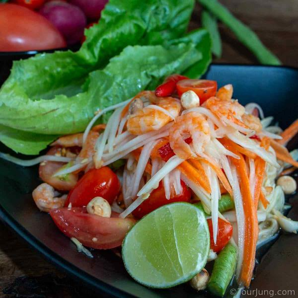

som tam

description
Som Tam Thai is the salad eaten by every Thai. Fresh, healthy and as spicy as you want, it's a great change. You can make it at home quickly and easily for a real change to your regular salads.
The importance of Som Tam reaches almost epic importance in the essence of life for quite a lot of Thais, with us becoming moody and feeling like part of our life is missing if we cannot eat it for any significant period of time - meaning a few days. I don't want you to feel like that so let's go make it - ha ha!
ingredients
- shredded papaya
- shredded carrot
- cloves of thai garlic
- small tomata
- dried shrimp
- palm sugar
- fish sauce
- vegan fish sauce
- tamarind paste
- lime juice
- roasted peanuts
- long green beans
- fresh vegetables
steps
- Using a shredding tool, shred the papaya into small strips.
- Shred the carrot in a similar fashion.
- Take the tops off the chili and the outer skin off the garlic. Place them in the Mortar and crush together with the pestle.
- Add in the sugar, fish or soy sauce, tamarind juice, and lime juice and gently massage the juices into the chili and garlic combination.
- Our tomatoes are sliced or quartered, added, and given a quick bop with the pestle to release the juices and bruise them up without mangling the sections.
- Then add the shredded papaya and onions, using the pestle to mix together all the ingredients gently to coat with the sauce.
- Gently spoon out your lovingly nurtured Som Tam Thai onto a plate trying not to let the juice splash all over the place.
original post